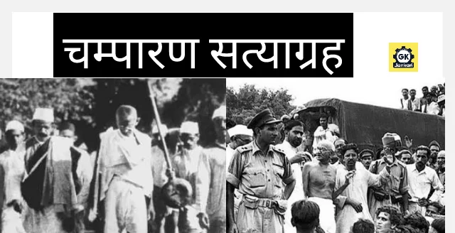

west champaran

About
West Champaran:-Is an administrative district in the state of Bihar in India,
located just 60 km (37 mi) west of Birgunj. It is the largest district in Bihar
with an area of 5,228 km²(2,019sq mi). It is a part of Tirhut Division.[1] The
district headquarters are located in Bettiah. The district is known for its
open border with Nepal. One of the major location in West Champaran is Kumar
Bagh for SAIL Special Processing Unit and Bhitiharwa where Mahatma Gandhi started
Satyagrah Aandolan.West Champaran is the largest sugarcane producing district of Bihar in 2022
References:- http://tirhut-muzaffarpur.bih.nic.in Archived 2015-03-16 at the Wayback Machine
"Bihar Economic Survey 2022-23". state.bihar.gov.in. Retrieved 2023-05-07.
Srivastava, Dayawanti et al. (ed.) (2010). "States and Union Territories: Bihar: Government". India 2010:
A Reference Annual (54th ed.). New Delhi, India: Additional Director General, Publications Division, Ministry of Information
and Broadcasting (India), Government of India. pp. 1118–1119. ISBN 978-81-230-1617-7. {{cite book}}: |last1= has generic name (help)
"Island Directory Tables: Islands by Land Area". United Nations Environment Program. 1998-02-18. Archived from the original on 2015-12-01.
Retrieved 2011-10-11. Amund Ringnes Island 5,255km2
Indian Ministry of Forests and Environment. "Protected areas: Bihar". Archived from the original on August 23, 2011. Retrieved September 25, 2011.
Jhala, Y. V.; Gopal, R.; Qureshi, Q., eds. (2008), Status of the Tigers, Co-predators, and Prey in India (PDF), TR 08/001, National Tiger Conservation
Authority, Govt. of India, New Delhi; Wildlife Institute of India, Dehradun, archived from the original (PDF) on 2 June 2013
Jhala, Y. V., Qureshi, Q., Sinha, P. R. (Eds.) (2011). Status of tigers, co-predators and prey in India, 2010. National Tiger Conservation Authority,
Govt. of India, New Delhi, and Wildlife Institute of India, Dehradun. TR 2011/003 pp-302
"Table A-02 Decadal Variation in Population Since 1901: Bihar" (PDF). census.gov.in. Registrar General and Census Commissioner of India.
"Table C-01 Population by Religion: Bihar". censusindia.gov.in. Registrar General and Census Commissioner of India. 2011.
"District Census Handbook: West Champaran" (PDF). Census of India. Registrar General and Census Commissioner of India. 2011.
US Directorate of Intelligence. "Country Comparison:Population". Archived from the original on 27 September 2011. Retrieved 2011-10-01. Liberia 3,786,764 July 2011 est.
"2010 Resident Population Data". U. S. Census Bureau. Archived from the original on 2013-10-19. Retrieved 2011-09-30. Oregon 3,831,074
"Table C-16 Population by Mother Tongue: Bihar". censusindia.gov.in. Registrar General and Census Commissioner of India. 2011.
M. Paul Lewis, ed. (2009). "Bhojpuri: A language of India". Ethnologue: Languages of the World (16th ed.). Dallas, Texas: SIL International. Archived from the original on 2011-10-06. Retrieved 2011-09-30.